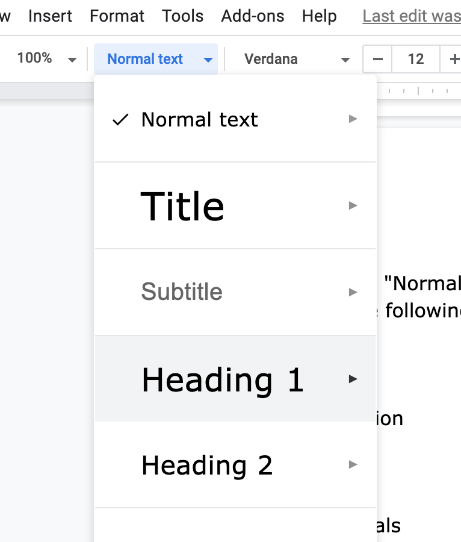

In this codelab, you'll describe the requirements and user stories for your wiki project.
Use Google Docs to collaborate with your teammates on a Product Requirements Document (PRD).
TeamName Wiki PRD
Authors: youremail@example.com, teammate@example.com
Use the "Normal text" style for this.
Vision
Motivation
Goals
Non-goals
Glossary
Functional Requirements
Non-functional Requirements
Use Cases
